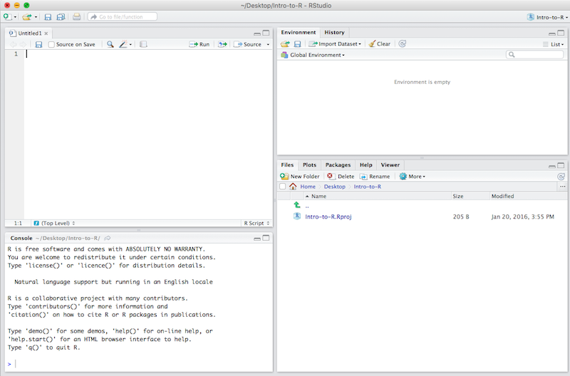
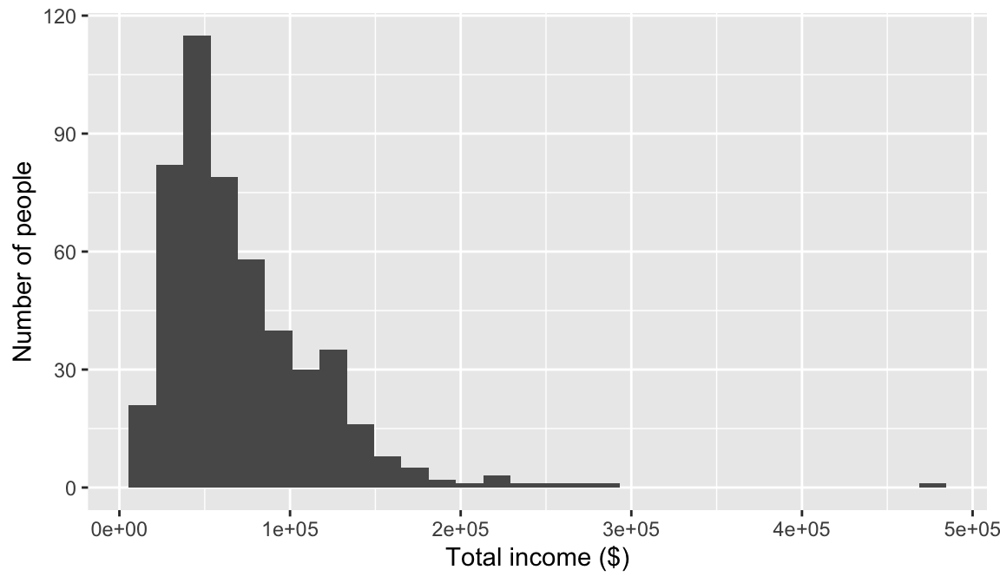
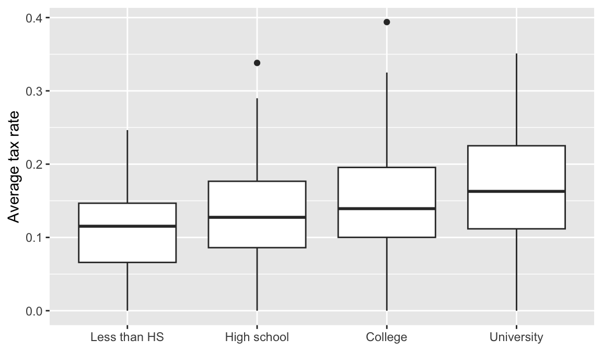
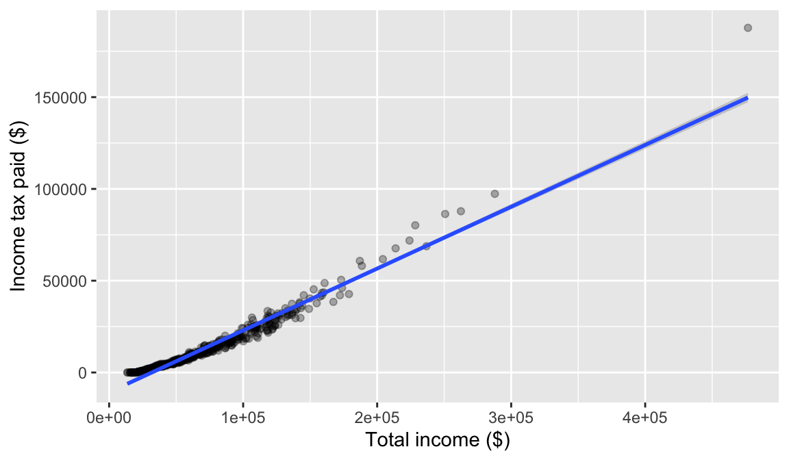

income <- 52000
income
#> [1] 52000Introduction to R and Quarto
In this course you will use R to analyse income and tax data, and Quarto to write up your results. This page introduces both. It is meant to be read at a keyboard: open RStudio and type the commands in as you go. Reading code is not the same as writing it.
No prior programming experience is assumed.
Before you start: download two files
Download both of these now, and save them in the same folder — for example a folder called EC313 on your Desktop.
ec313cis.csv — the data used throughout this page
ec313-r-template.qmd — a practice Quarto document that runs the main steps on this page
The three pieces
It helps to be clear about what each piece of software does, because students often confuse them.
| Software | What it is |
|---|---|
| R | The statistical language. It does the actual computing. |
| RStudio | The program you work in. It is a comfortable front end for R. |
| Quarto | The document system. It turns your code and writing into a PDF. |
An analogy: R is the engine, RStudio is the dashboard and steering wheel, and Quarto is the report you hand in describing where you drove.
Install R from https://cran.r-project.org and RStudio from https://posit.co/download/rstudio-desktop/. Install R first. Quarto comes bundled with RStudio, so you do not need to download it separately.
Part 1: R and RStudio
This part is about R itself — the language you write, and the program you write it in. Work through it at a keyboard. By the end you will be able to load a dataset, describe it, reshape it, graph it, and run a regression.
Finding your way around RStudio
You installed two programs, but from now on you only ever open one of them. Opening RStudio starts R for you, running quietly in the background. You never need to open R itself, and most people never do.
You can watch this happen. The moment RStudio finishes loading, the Console prints R’s version number and startup message — that is R announcing itself, already running and waiting for instructions. To go back to the analogy: you get into the car, and the engine is already turning over.
When you open RStudio you will see four panes. They can be rearranged and re-coloured, so yours may not look identical to the picture, but every installation has these same four.

- Source (top left) — where you write and save your code. In the picture it holds an empty script called
Untitled1. When you open a Quarto document here, a Render button appears at the top of this pane. - Console (bottom left) — where R actually runs. Code you send from Source appears here along with its results, and you can type directly at the
>prompt for quick experiments. - Environment (top right) — a list of every object you have created, with its size. It says “Environment is empty” in the picture because nothing has been run yet. Once you load data, this is where you check that it really has the 500 rows you expected.
- Files / Plots / Packages / Help (bottom right) — in the picture the Files tab is showing the contents of the project folder. Your graphs appear under Plots, and help pages under Help.
The one habit that matters most
Write your code in the Source pane and save it. Code typed into the Console disappears. Every assignment in this course requires you to submit your code, so if it is not saved in a file, you do not have it.
R basics
Everything you work with in R is an object: a named thing that holds something. A single income is an object. A column of 50,000 incomes is an object. A whole survey, a graph, the results of a regression — all objects. You give each one a name, and it appears in the Environment pane the moment you create it.
What distinguishes one kind of object from another is what it holds and how much of it. The rest of this section introduces them in order of size, starting with the smallest.
Scalars and vectors
R works by storing things in named objects. You create one with the assignment arrow <-:
The name goes on the left, the value on the right. An object holding a single value like this is called a scalar. Once it exists, you can compute with it:
taxrate <- 0.15
income * taxrate
#> [1] 7800Names are case sensitive: income and Income are different objects. This is the single most common source of beginner errors.
Most of the time you want more than one value. A vector holds several values of the same type, in order, and you build one with c(), which is short for “combine”:
incomes <- c(52000, 61000, 44500, 89000, 120000)
incomes
#> [1] 52000 61000 44500 89000 120000Vectors are the fundamental data structure in R. A variable in a dataset — everyone’s total income, everyone’s age — is a vector.
Vectors have a type
Every element of a vector must be the same type. The three you will meet constantly:
taxpaid <- c(8500.50, 12400.00, 3150.25) # numeric
person <- c("Ali", "Bea", "Cal") # character (text, in quotes)
filed <- c(TRUE, FALSE, TRUE) # logicalclass() tells you which you have:
class(taxpaid)
#> [1] "numeric"
class(person)
#> [1] "character"
class(filed)
#> [1] "logical"If you mix types, R quietly converts everything to the most accommodating one rather than complaining:
c(1, "two", 3)
#> [1] "1" "two" "3"Everything became text — note the quotation marks. This is worth remembering, because a numeric variable that arrives as text will refuse to average, and this is usually why. When it happens, convert it deliberately with as.numeric():
as.numeric(c("8500.50", "12400.00"))
#> [1] 8500.5 12400.0Data frames
A dataset is vectors side by side
A single vector holds one variable. Real data has many variables measured on the same people, and we need to keep them lined up: the third age must belong to the same person as the third income.
That is all a data frame is — a set of vectors of equal length, standing side by side as columns. Each column is one variable. Each row is one observation, usually one person.
We can build a small one by hand to see the structure. data.frame() takes named vectors and stacks them into columns:
people <- data.frame(
name = c("Ali", "Bea", "Cal", "Dee", "Eli"),
age = c(24, 38, 51, 29, 45),
educ = c("High school", "University", "College", "University", "High school"),
totinc = c(31000, 74000, 52500, 66000, 43000)
)
people
#> name age educ totinc
#> 1 Ali 24 High school 31000
#> 2 Bea 38 University 74000
#> 3 Cal 51 College 52500
#> 4 Dee 29 University 66000
#> 5 Eli 45 High school 43000Five people, four variables. Notice that the columns have different types — name and educ are text, age and totinc are numeric — but within a column the type is the same, exactly as with a vector.
Every dataset you meet in this course has this shape. The Canadian Income Survey extract for your assignment is the same thing with more rows and more columns.
Columns are vectors
The $ operator pulls one column out of a data frame, and what comes back is an ordinary vector:
people$totinc
#> [1] 31000 74000 52500 66000 43000This is the connection worth holding on to. A data frame is not a new kind of thing to learn — it is a tidy arrangement of the vectors you already understand.
Picking out elements
Square brackets select elements of a vector by position:
incomes[1]
#> [1] 52000
incomes[2:3]
#> [1] 61000 44500More useful, you can select by condition:
incomes > 60000
#> [1] FALSE TRUE FALSE TRUE TRUE
incomes[incomes > 60000]
#> [1] 61000 89000 120000The first line returns a logical vector answering the question for each element; the second keeps only the elements where the answer was TRUE.
Because a column of a data frame is just a vector, the very same brackets work on it:
people$totinc[2]
#> [1] 74000
people$totinc[people$totinc > 50000]
#> [1] 74000 52500 66000Picking out whole rows and columns of a data frame works a little differently, and we will do it with two much friendlier functions, filter() and select(), once the tidyverse is loaded.
Other kinds of object
Vectors and data frames are the two you will use constantly, and between them they cover almost everything in this course.
R does have other kinds of object, and a few of them will turn up later once we start running regressions. There is no need to learn them in advance — we will deal with each one when it appears and there is something useful to do with it.
Functions
Objects hold your data. Functions are what you do to them. You call one by writing its name followed by parentheses, with the thing you want it to work on inside:
sqrt(16)
#> [1] 4
round(24.567, 1)
#> [1] 24.6You have already used one: c() is a function that takes a set of values and returns a vector.
The things inside the parentheses are called arguments. Above, round() took two: the number to round, and how many decimal places to keep. Many arguments are optional and have sensible defaults — writing round(24.567) alone rounds to a whole number.
Functions that summarise data take a whole vector and return a single number:
mean(incomes)
#> [1] 73300
median(incomes)
#> [1] 61000
length(incomes)
#> [1] 5
Getting help
Typing ?round in the Console opens the help page for a function, which lists every argument it accepts. Help pages are dense, but scroll to the bottom: there are almost always worked examples.
Missing values
Arguments matter more than they first appear. Real survey data is full of gaps, which R writes as NA, meaning “not available.” R refuses to guess what a missing value should be:
incomes_missing <- c(52000, 61000, NA, 89000, 120000)
mean(incomes_missing)
#> [1] NAThe answer is NA, because the true mean genuinely is unknown. To average the values you do have, say so explicitly with an argument:
mean(incomes_missing, na.rm = TRUE)
#> [1] 80500
Warning
Getting NA where you expected a number almost always means missing values in your data, not a mistake in your code. Check with sum(is.na(x)) to see how many there are before deciding what to do.
Packages
R comes with a great deal built in, but most of the convenient tools live in packages: bundles of extra functions that somebody has written and shared. There are thousands of them, and they are free.
Installing a package downloads it onto your computer. You do this once, in the Console:
install.packages("packagename")Loading a package makes its functions available for use. You do this every time you start a new session, at the top of your document:
library(packagename)
Note
install.packages() is like buying a book; library() is like taking it off the shelf. You buy once, but you take it off the shelf every time you sit down to work.
Base R and the tidyverse
Everything we have done so far — c(), class(), data.frame(), square brackets — is base R: the functions that come with R itself, no packages needed.
Base R can do everything this course requires, but a lot of it is awkward. The tidyverse is a set of packages whose functions are built specifically for working with data, and they make the common jobs far easier to write and to read. Three of them do most of the work:
| Package | What its functions are for |
|---|---|
| readr | Getting data from a file into R |
| dplyr | Working with data once it is there: keeping certain rows, creating new variables, computing averages by group |
| ggplot2 | Turning data into graphs |
You will meet all three in the sections that follow. They are built to a common design, so the habits you pick up with one carry over to the others, and they are meant to be chained together — the output of one function becomes the input of the next.
The convenient part is that you do not install them one at a time. Installing the tidyverse installs the whole set, and a single library() call loads them all.
Install it once:
install.packages("tidyverse")And load it now, since everything below depends on it:
library(tidyverse)
Tip
When you search for help online you will find answers written in both styles, sometimes for the same question. Neither is wrong. Use whichever you understand, but expect the code in lectures and assignments to look like the tidyverse.
Working with a realistic dataset
Five people are not enough to do economics with. For the rest of this page we will use a larger dataset called cis, containing 500 working-age people with their age, sex, education, total income, government transfers received, and income tax paid. It is artificial, but it is built to behave like the Canadian Income Survey extracts you will use in the assignments, and it is already loaded here.
Reading data from a file
In an assignment you would not be handed a dataset — you would read one in from a file you downloaded. The cis data on this page is the file ec313cis.csv that you downloaded at the start. Put the file in the same folder as your Quarto document, then read it with the function matching its format:
# comma-separated values
cis <- read_csv("ec313cis.csv")
# Stata format (a .dta file), using the haven package
library(haven)
cis <- read_dta("filename.dta")Reading a file gives you a data frame, which you then work with exactly as we are about to.
“Cannot open file”
This error nearly always means R is looking in a different folder than you are. R looks in its working directory. The reliable fix is to create an RStudio Project for the course (File → New Project) and keep your data and documents inside that project folder. Then paths just work.
Looking at your data
Never start analysing data you have not looked at. A handful of functions do most of the work.
glimpse() gives you the shape of the dataset and the type of every column:
glimpse(cis)
#> Rows: 500
#> Columns: 9
#> $ id <int> 1, 2, 3, 4, 5, 6, 7, 8, 9, 10, 11, 12, 13, 14, 15, 16, 17, 1…
#> $ age <int> 28, 41, 52, 42, 39, 58, 20, 45, 28, 23, 56, 25, 37, 21, 63, …
#> $ female <int> 1, 0, 0, 1, 1, 0, 0, 0, 1, 1, 0, 1, 1, 1, 0, 1, 1, 0, 0, 0, …
#> $ educ <chr> "College", "College", "University", "College", "High school"…
#> $ yrschool <dbl> 14, 14, 16, 14, 12, 12, 12, 12, 14, 16, 10, 14, 14, 10, 16, …
#> $ totinc <dbl> 37930, 52173, 119541, 78953, 37549, 45079, 51937, 20334, 407…
#> $ transfers <dbl> 5055, 6704, 114, 3938, 7032, 6679, 5440, 7289, 6541, 4786, 3…
#> $ inctax <dbl> 3385, 6223, 28414, 15124, 3137, 4497, 6142, 68, 3460, 7985, …
#> $ atinc <dbl> 39600, 52654, 91241, 67767, 41444, 47261, 51235, 27555, 4387…head() shows the first few rows, so you can see what actual values look like:
head(cis)
#> # A tibble: 6 × 9
#> id age female educ yrschool totinc transfers inctax atinc
#> <int> <int> <int> <chr> <dbl> <dbl> <dbl> <dbl> <dbl>
#> 1 1 28 1 College 14 37930 5055 3385 39600
#> 2 2 41 0 College 14 52173 6704 6223 52654
#> 3 3 52 0 University 16 119541 114 28414 91241
#> 4 4 42 1 College 14 78953 3938 15124 67767
#> 5 5 39 1 High school 12 37549 7032 3137 41444
#> 6 6 58 0 High school 12 45079 6679 4497 47261You will notice the word tibble in that output. A tibble is the tidyverse’s version of a data frame: the same rectangle of columns, but printed more helpfully — it shows you the type of each column and stops after ten rows instead of filling your screen. Anything that works on a data frame works on a tibble, so you can treat the two words as interchangeable.
And summary() describes a single variable — remember that cis$totinc is just a vector:
summary(cis$totinc)
#> Min. 1st Qu. Median Mean 3rd Qu. Max.
#> 13550 39847 59630 71464 91752 476675For a categorical variable, count the categories instead:
count(cis, educ)
#> # A tibble: 4 × 2
#> educ n
#> <chr> <int>
#> 1 College 146
#> 2 High school 169
#> 3 Less than HS 42
#> 4 University 143Which summary you use depends on the kind of variable, and the distinction matters:
- A continuous variable can take any value in a range — income, tax paid, age. Averages and percentiles make sense, so use
summary(). - A categorical variable sorts people into groups — education, province, sex. The groups are often stored as numbers, but those numbers are labels, not quantities. The average of “1 = man, 2 = woman” means nothing. Count the categories with
count()instead.
The data viewer
The Console is not the only way to look. RStudio has a spreadsheet-style viewer built in. Click the name cis in the Environment pane, or run:
View(cis)Note the capital V — view() will not work. Either way, the dataset opens in a tab beside your document, where you can scroll through all 500 rows, sort by clicking a column heading, and filter to particular values.
This is often the fastest way to get a feel for a dataset you have never seen before, and it is worth doing alongside glimpse() rather than instead of it. Two things to know: nothing you do in the viewer changes your data or gets recorded in your document, so you cannot break anything by exploring; and for the same reason, sorting or filtering there is no substitute for writing the code. Only the code goes into your assignment.
Tip
Look at a dataset this way every time you open one, before doing anything else. Most analysis mistakes are really misunderstandings about what is in the data.
Missing values in real data
Survey files rarely mark missing values with a tidy NA. It is common to use an impossible number instead — in the Canadian Income Survey, the survey your assignment extracts come from, missing earnings are stored as 999999999996. R has no way to know that this is not a real income:
earnings_raw <- c(45000, 62000, 999999999996, 38000)
mean(earnings_raw)
#> [1] 2.5e+11An average income of 250 billion dollars is a clue that something is wrong, but a subtler code would slip through unnoticed. Convert the code to NA first, with na_if():
earnings_clean <- na_if(earnings_raw, 999999999996)
earnings_clean
#> [1] 45000 62000 NA 38000
mean(earnings_clean, na.rm = TRUE)
#> [1] 48333.33Now the mean describes the three people we actually have data for.
Read the documentation first
Every survey comes with documentation — a codebook listing what each variable measures and how missing values are coded. Read it before you compute anything. A missing-value code left in the data can invalidate every number in your assignment, and nothing in R will warn you.
Manipulating data
Five verbs cover most of what you will do. Each takes a data frame and returns a modified data frame.
The pipe
Before the verbs themselves, one piece of punctuation. You are about to see the symbol |> everywhere. It is the pipe, and it takes the thing on its left and feeds it into the function on its right. These two lines do exactly the same thing:
mean(incomes)
#> [1] 73300
incomes |> mean()
#> [1] 73300For a single function the pipe is not worth the trouble. Its value is in what comes next: when several operations happen one after another, the pipe lets you read them left to right, in the order they actually happen, instead of from the inside out.
filter() — keep some rows
How many people in the sample paid no income tax at all?
cis |>
filter(inctax == 0) |>
nrow()
#> [1] 16Note the double equals ==. A single = assigns; a double == tests for equality. Conditions can be combined with & (and) and | (or):
cis |>
filter(educ == "University" & age < 30) |>
nrow()
#> [1] 29select() — keep some columns
cis |>
select(id, educ, totinc, inctax) |>
head(3)
#> # A tibble: 3 × 4
#> id educ totinc inctax
#> <int> <chr> <dbl> <dbl>
#> 1 1 College 37930 3385
#> 2 2 College 52173 6223
#> 3 3 University 119541 28414mutate() — create variables
The average tax rate — tax paid as a share of income — is the workhorse variable of tax analysis, and it is not in the data. Create it:
cis <- cis |>
mutate(atr = inctax / totinc)summarise() — boil the data down
summarise() collapses a whole dataset into a single row of summary numbers. You name each thing you want, and say how to calculate it:
cis |>
summarise(
n = n(),
mean_inc = mean(totinc),
mean_atr = mean(atr)
)
#> # A tibble: 1 × 3
#> n mean_inc mean_atr
#> <int> <dbl> <dbl>
#> 1 500 71464. 0.145Three numbers describing all 500 people: how many there are, their average income, and the average share of income they pay in tax. n() is a special helper that counts rows.
Note what happened to the shape of things. filter(), select() and mutate() all handed back a dataset with one row per person. summarise() hands back one row, full stop — the people are gone, and what remains is a description of them.
group_by() — do it separately for each group
A single average for everyone is rarely what you want. The interesting question is almost always comparative: do incomes and tax rates differ by education, by sex, by province?
group_by() answers that. On its own it changes nothing you can see — it simply marks the dataset as divided into groups. The work happens when summarise() runs afterwards, because it now produces one row per group rather than one row overall:
cis |>
group_by(educ) |>
summarise(
n = n(),
mean_inc = mean(totinc),
mean_atr = mean(atr)
)
#> # A tibble: 4 × 4
#> educ n mean_inc mean_atr
#> <chr> <int> <dbl> <dbl>
#> 1 College 146 73019. 0.146
#> 2 High school 169 63371. 0.133
#> 3 Less than HS 42 49473. 0.107
#> 4 University 143 85901. 0.168That is the identical summarise() call as before, with one line added above it — and the result is already a public finance finding: income rises with education, and the average tax rate rises with it. People with higher incomes pay a larger share of their income in tax, which is what it means for an income tax to be progressive.
Group by something else and you ask a different question. Here is the raw gender income gap:
cis |>
group_by(female) |>
summarise(mean_inc = mean(totinc), n = n())
#> # A tibble: 2 × 3
#> female mean_inc n
#> <int> <dbl> <int>
#> 1 0 76930. 249
#> 2 1 66042. 251This pairing is the workhorse of applied work. Most tables you will ever produce are some version of “group by one thing, summarise another.”
Ordering categories
Notice that education came out alphabetically, which is not the natural order. To fix that, make it a factor with the levels you want:
cis <- cis |>
mutate(educ = factor(
educ,
levels = c("Less than HS", "High school", "College", "University")
))
count(cis, educ)
#> # A tibble: 4 × 2
#> educ n
#> <fct> <int>
#> 1 Less than HS 42
#> 2 High school 169
#> 3 College 146
#> 4 University 143Graphs
Graphs in R are built with ggplot2, loaded as part of the tidyverse. Every plot has the same three ingredients: the data, a mapping from variables to visual properties (aes), and a geometry (geom_) saying what to draw.
ggplot(cis, aes(x = totinc)) +
geom_histogram(bins = 30) +
labs(x = "Total income ($)", y = "Number of people")
The long right tail — most people bunched at moderate incomes, a few far out to the right — is characteristic of income data, and you will see it in every income survey you ever open.
Note that ggplot layers are joined with +, not the pipe. This is an historical quirk and a common source of confusion.
Mapping a variable to colour or to the x axis of a boxplot lets you compare groups:
ggplot(cis, aes(x = educ, y = atr)) +
geom_boxplot() +
labs(x = NULL, y = "Average tax rate")
And a scatterplot shows how two continuous variables move together. Adding geom_smooth(method = "lm") draws the regression line through the points:
ggplot(cis, aes(x = totinc, y = inctax)) +
geom_point(alpha = 0.3) +
geom_smooth(method = "lm") +
labs(x = "Total income ($)", y = "Income tax paid ($)")
The upward slope is the tax schedule at work: more income, more tax. With this many points the cloud is dense, which is normal for survey microdata. The line is what carries the message.
Assignment graphs need labels
Default axis labels are variable names, which are not acceptable in submitted work. Always set labs() with readable labels and units.
Regression
Linear regression uses lm(), with a formula written outcome ~ predictor1 + predictor2:
model1 <- lm(inctax ~ totinc, data = cis)
summary(model1)
#>
#> Call:
#> lm(formula = inctax ~ totinc, data = cis)
#>
#> Residuals:
#> Min 1Q Median 3Q Max
#> -7731 -1683 -219 1768 37973
#>
#> Coefficients:
#> Estimate Std. Error t value Pr(>|t|)
#> (Intercept) -1.074e+04 2.753e+02 -39.01 <2e-16 ***
#> totinc 3.367e-01 3.241e-03 103.92 <2e-16 ***
#> ---
#> Signif. codes: 0 '***' 0.001 '**' 0.01 '*' 0.05 '.' 0.1 ' ' 1
#>
#> Residual standard error: 3330 on 498 degrees of freedom
#> Multiple R-squared: 0.9559, Adjusted R-squared: 0.9558
#> F-statistic: 1.08e+04 on 1 and 498 DF, p-value: < 2.2e-16That is a lot of output, but only a few parts matter:
Estimate— the coefficient. Here it says that an extra dollar of income raises tax paid by about 34 cents on average — an estimate of the effective marginal tax rate in this sample.Std. Error— how precisely the coefficient is estimated.Pr(>|t|)— the p-value for the test that the coefficient is zero. Small means the estimate is distinguishable from no effect.Multiple R-squared— the share of the variation in tax paid the model explains.
A second regression asks a different question: is the tax system progressive? If the average tax rate rises with income, it is — that is essentially the definition:
cis <- cis |>
mutate(lntotinc = log(totinc))
model2 <- lm(atr ~ lntotinc, data = cis)The positive coefficient on log income confirms that people with higher incomes pay a larger share of their income in tax.
Categorical predictors
You can put a categorical variable straight into a regression, and R creates the dummy variables for you:
model3 <- lm(atr ~ educ, data = cis)
coef(model3)
#> (Intercept) educHigh school educCollege educUniversity
#> 0.10693646 0.02649943 0.03885500 0.06067432Notice there are only three coefficients for four education categories. R leaves one out — here “Less than HS” — as the base group, and every other coefficient says how that group compares to it. There is no way to include all four; the base group is what the others are measured against.
coef() was used above to show just the coefficients. It returns a named vector, which is the same kind of object from the start of this page.
To compare against a different group, change which level comes first:
cis_hs <- mutate(cis, educ = relevel(educ, ref = "High school"))
model4 <- lm(atr ~ educ, data = cis_hs)
coef(model4)
#> (Intercept) educLess than HS educCollege educUniversity
#> 0.13343589 -0.02649943 0.01235557 0.03417489Now everything is relative to high school graduates, and the “Less than HS” coefficient is negative, as you would expect from a progressive tax paired with lower incomes.
Presenting results
Console output is not acceptable in submitted work. Use modelsummary to produce a proper table:
library(modelsummary)
modelsummary(
list("Tax schedule" = model1, "Progressivity" = model2),
stars = TRUE
)| Tax schedule | Progressivity | |
|---|---|---|
| + p < 0.1, * p < 0.05, ** p < 0.01, *** p < 0.001 | ||
| (Intercept) | -10739.049*** | -1.181*** |
| (275.327) | (0.014) | |
| totinc | 0.337*** | |
| (0.003) | ||
| lntotinc | 0.120*** | |
| (0.001) | ||
| Num.Obs. | 500 | 500 |
| R2 | 0.956 | 0.946 |
| R2 Adj. | 0.956 | 0.946 |
| AIC | 9533.6 | -2657.9 |
| BIC | 9546.2 | -2645.2 |
| Log.Lik. | -4763.794 | 1331.933 |
| F | 10798.571 | 8728.105 |
| RMSE | 3323.09 | 0.02 |
This is the format your assignments should use.
Part 2: Quarto
Part 1 was about getting answers. This part is about presenting them. Quarto is how you turn the code and results from Part 1 into the PDF you hand in.
What a Quarto document is
A Quarto file (extension .qmd) is a single document containing your writing, your code, and the output of that code. When you render it, Quarto runs every piece of code fresh and produces a finished PDF with the results embedded.
This matters for two reasons. Your work is reproducible, since the document cannot drift out of step with the code that produced it. And you never have to copy and paste a number or a graph again — a constant source of errors.
To create one in RStudio: File → New File → Quarto Document.
Download the practice file
Rather than starting from a blank document, start from this one. It is a working Quarto file containing everything on this page: it loads packages, reads in the practice data, summarises it, draws a graph, and runs a regression. If you downloaded both files at the start, you already have them.
Download both files into the same folder, open the .qmd in RStudio, and press Render. You should get a PDF. Then start changing things — that is how you learn this.
It uses the same cis data as this page, read in with read_csv(), so every result you see above you can reproduce and alter yourself.
The three ingredients
A .qmd file has exactly three kinds of content.
1. The YAML header, at the very top, between three dashes. It sets the title and output format:
---
title: "EC313 Assignment 1"
author: "Your Name, 123456789"
format: pdf
---2. Text, written in Markdown. A few marks do most of the work:
| You type | You get |
|---|---|
## Question 1 |
A section heading |
**important** |
important |
*emphasis* |
emphasis |
- item |
A bullet point |
$\beta_1$ |
An inline equation, \(\beta_1\) |
3. Code chunks, fenced by three backticks with {r}. In RStudio the keyboard shortcut is Ctrl+Alt+I (Cmd+Option+I on a Mac):
```{r}
mean(cis$totinc)
```Chunk options go on lines starting with #| inside the chunk. The ones you will want:
| Option | Effect |
|---|---|
#| echo: false |
Run the code but hide it; show only output |
#| eval: false |
Show the code but do not run it |
#| message: false |
Suppress package startup chatter |
#| warning: false |
Suppress warnings |
#| fig-cap: "..." |
Add a caption to a figure |
For this course, leave code visible — showing your code is part of what is being marked.
Inline code
You can also put a computed number directly into a sentence, rather than typing it by hand. In your text, write this:
The mean total income is `r round(mean(cis$totinc))` dollars.and when you render, R replaces it with the answer:
The mean total income is 7.1464^{4} dollars.
That number was computed while this page was being built. If the data changed, the sentence would change with it — which is why you should never copy a number out of your output and retype it.
Rendering
Everything you hand in for this course is a PDF, and producing a PDF needs a LaTeX installation working quietly in the background. You almost certainly do not have one yet. Install it once, in the Console, and then never think about it again:
install.packages("tinytex")
tinytex::install_tinytex()It takes a few minutes and downloads a few hundred megabytes. If you prefer, the same thing can be done from the Terminal tab with quarto install tinytex.
Warning
Do this now, not later. The first time most people try to produce a PDF is an hour before a deadline, and that is a bad moment to discover a missing LaTeX installation. If a render fails with an error mentioning LaTeX, tlmgr, or a missing .sty file, this is what it is telling you.
With that in place, press the Render button at the top of the Source pane, or Ctrl+Shift+K (Cmd+Shift+K on a Mac). Quarto runs your code from top to bottom in a clean session and writes a PDF next to your .qmd.
Render early and often
Because rendering starts from a clean session, a document can fail to render even though everything worked in your Console — usually because an object was created in the Console and never written into the document. Render after finishing each question. Discovering a problem at 9:00pm on the due date is avoidable.
Common errors
Everyone hits these. They are not a sign that you are bad at this.
| Message | Usual cause |
|---|---|
could not find function "x" |
A package is not loaded — add the library() call |
object 'x' not found |
Typo, wrong capitalisation, or the object was never created |
unexpected symbol |
A missing comma, bracket, or quotation mark |
cannot open file |
Wrong working directory — use an RStudio Project |
A + in the Console |
R is waiting for you to finish an incomplete command; press Esc |
How to read an error
Errors look intimidating but usually name the problem in the first line. Read that line, look at the line of code it points to, and check the simple things first: spelling, capitalisation, and matching brackets. Pasting the message into a search engine is a legitimate and widely used technique.
Where to get help
Everything below is free to read online. You do not need to buy anything for this course beyond the textbook.
- R for Data Science — the standard reference for the tidyverse, free in full on that site. Chapters 1 through 5 cover most of what this course needs.
- Posit Cheatsheets — free one-page references for dplyr, ggplot2, and RStudio itself. Print the dplyr and ggplot2 ones.
- The Quarto guide — official documentation, well organised and full of examples.
- ggplot2 reference — every geometry, with pictures.
- Office hours. If you are stuck for more than twenty minutes on something mechanical, bring it to me rather than losing an evening to it.